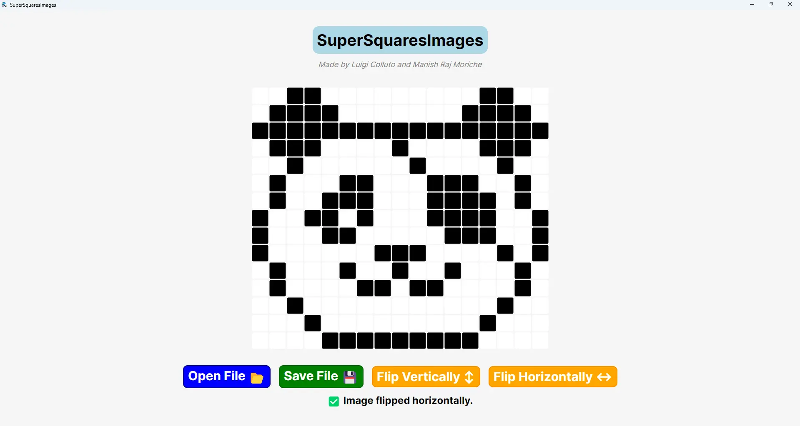
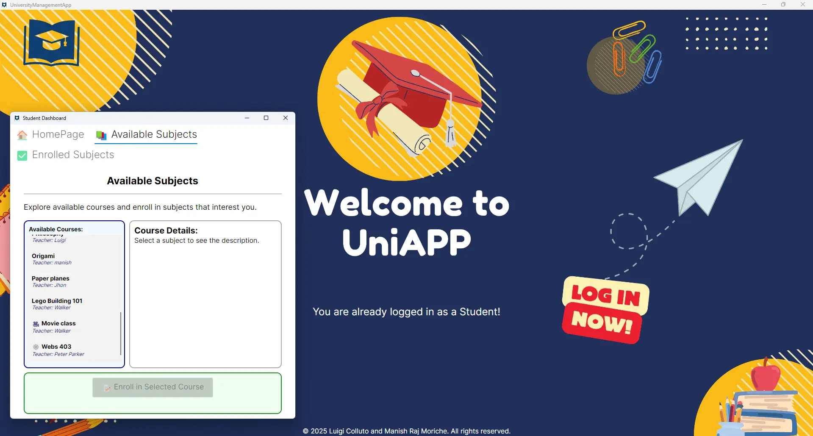
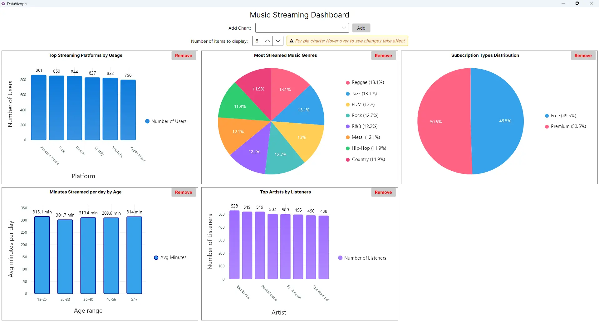
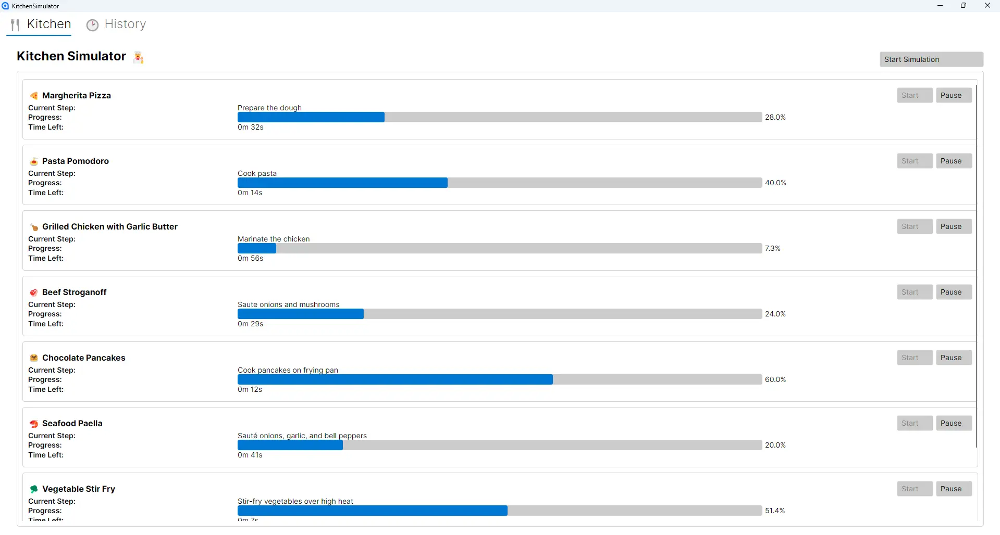

This collection features various projects and assignments completed as part of the Advanced Object-Oriented Programming coursework for the Software Engineering program at SDU (University of Southern Denmark).
All four projects were developed in collaboration with a teammate from the same course. Specific contributions for each assignment are detailed in their respective README files.
The focus of these projects was to deepen the understanding of advanced OOP concepts, design patterns, and software architecture principles using C# and the Avalonia framework.
Project Overview
Homework 1 - Image Editor App
An application that reads custom .b2img.txt files, loads them into memory, and allows users to display and modify values via a GUI. It writes the modified data back to an output file, demonstrating file handling and GUI manipulation with Avalonia.

Homework 2 - University Management App
A system for managing university data including students, teachers, and subjects. Features include user authentication (login/signup), role-based access, and CRUD operations for university entities. It showcases data management and UI interaction.

Homework 3 - Data Visualization App
A fully functional data visualization tool for analyzing music streaming datasets. It implements preset queries to visualize metrics like top streaming platforms, genres, and artist popularity, emphasizing software architecture and usability.

Homework 4 - Kitchen Simulator
A concurrent simulation of a restaurant kitchen where recipes are prepared in real-time. It utilizes multithreading, JSON parsing, and animated UI feedback to visualize the step-by-step preparation process across multiple stations.

For more details on specific implementations, please check the above Github repository.